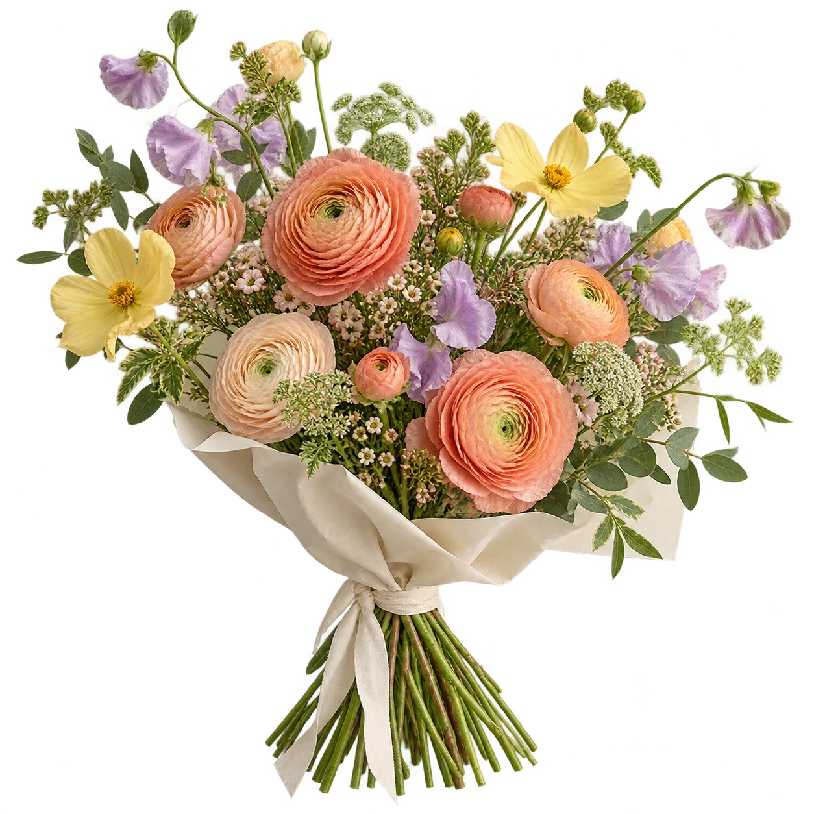
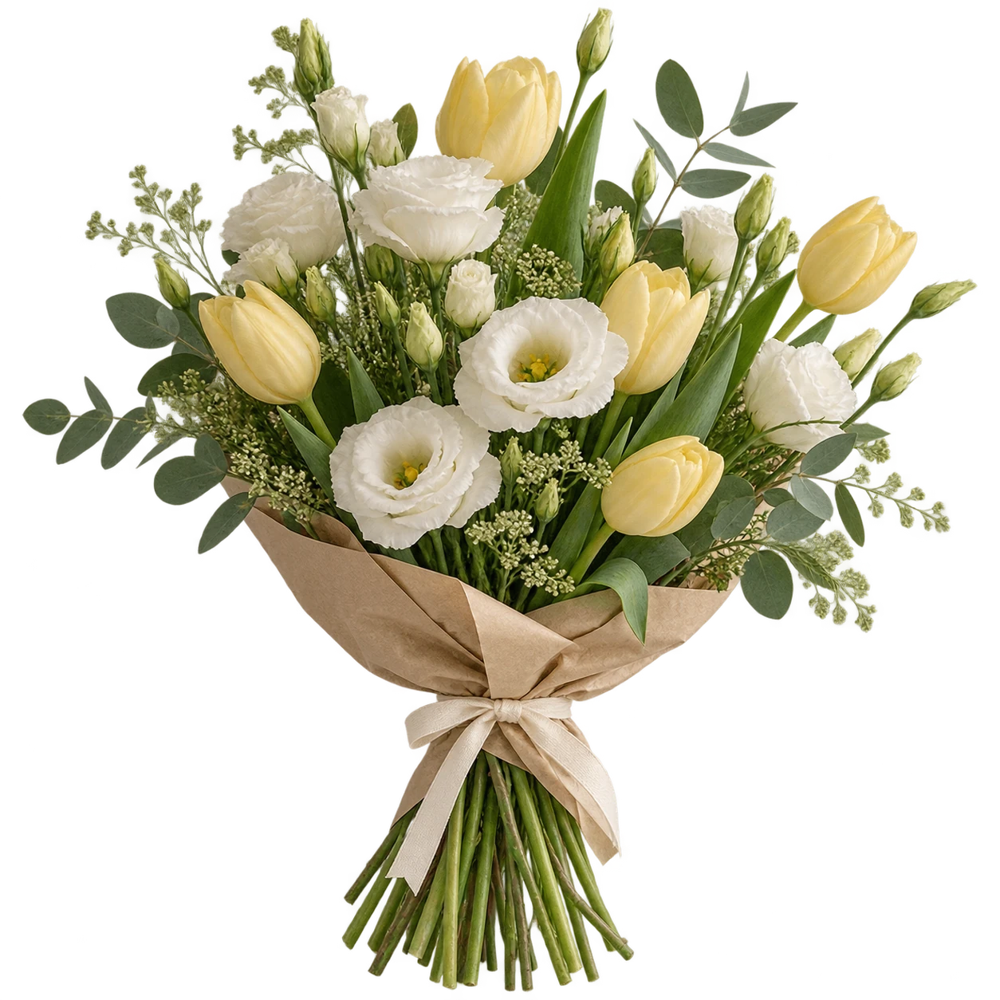
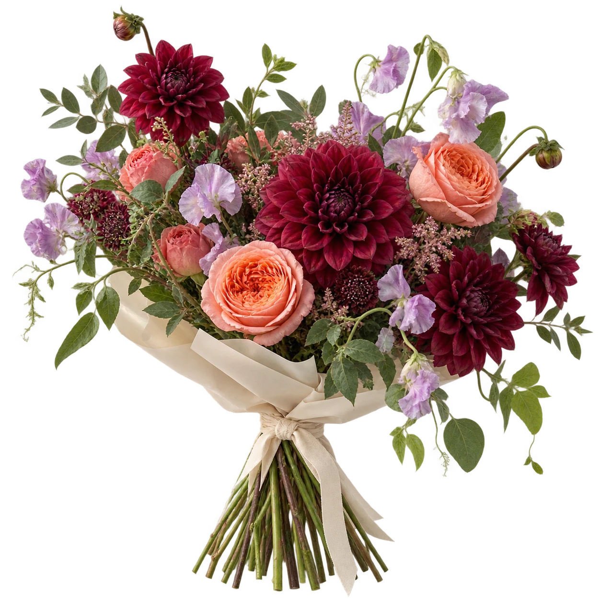

Букет с тёплым характером
Тёплый
день
Коралловые ранункулюсы, лёгкие жёлтые и сиреневые цветы. Как маленькая прогулка по летнему саду.
от 3 200 ₽ демо-цена
Задумано в Ставрополе
для обычных и особенных дней
Не искать повод. Зайти за цветами.

Букет с тёплым характером
Коралловые ранункулюсы, лёгкие жёлтые и сиреневые цветы. Как маленькая прогулка по летнему саду.
от 3 200 ₽ демо-цена

Когда важнее нежность
Светлая эустома и нежные тюльпаны. Мягкие оттенки и ничего лишнего — чтобы сказать самое простое.
от 2 800 ₽ демо-цена

Чуть смелее обычного
Георгины и коралловые розы с сиреневыми акцентами. Насыщенный, живой и совсем не скромный.
от 4 400 ₽ демо-цена
Три букета. Три маленьких повода.
А у меня своя идеяО простой идее
Не каждый букет — признание на всю жизнь. Иногда это спасибо за вчера, привет посреди недели или цветы на собственном кухонном столе.
Вот и весь наш повод.
Выбрали букет? Добавьте пару слов от себя.
Расскажите, для кого букет, какие цвета нравятся и какой бюджет комфортен. Если есть любимый цветок или важная дата, это тоже пригодится. На настоящем сайте детали уточнит флорист; здесь можно только попробовать форму.